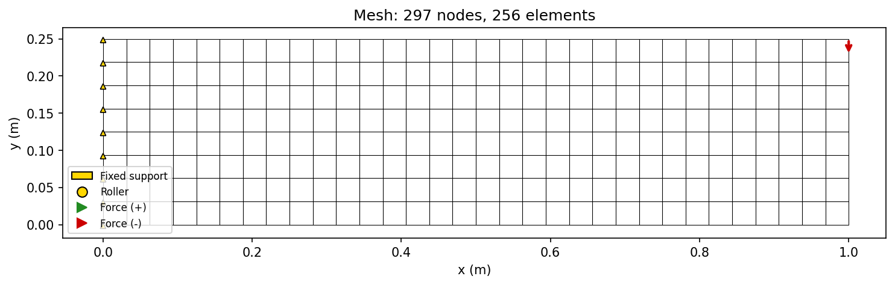
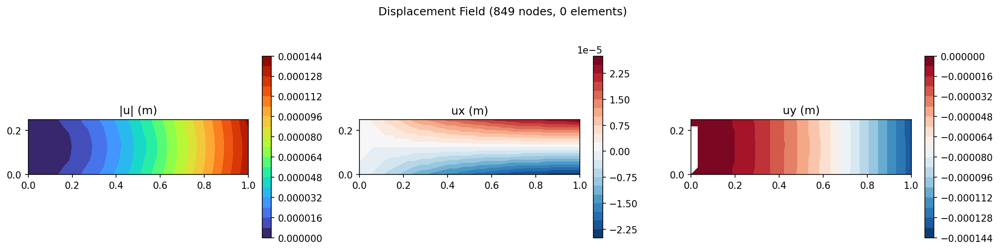
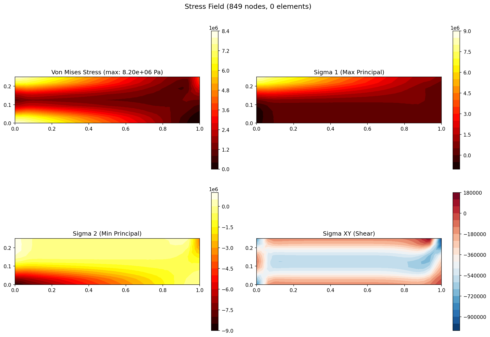
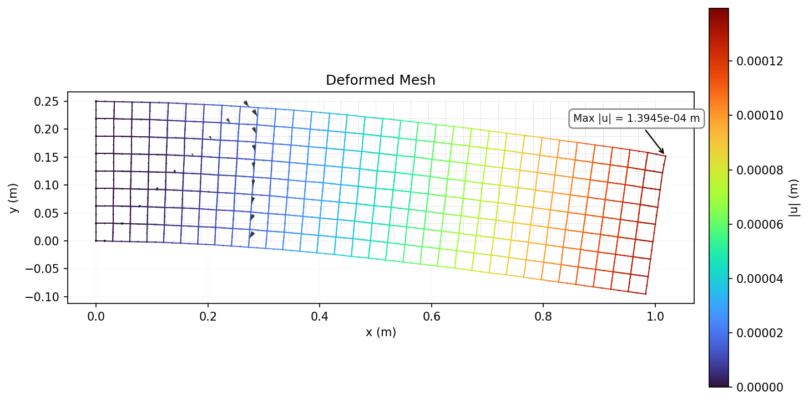
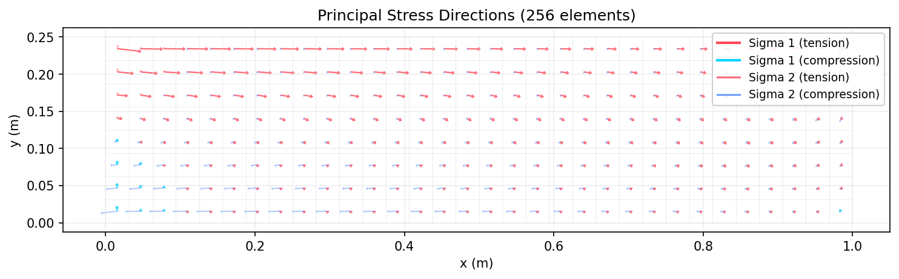

Cantilever Beam
A beam clamped at the left end with a point load at the right tip. Validates basic element correctness, stiffness matrix assembly, and boundary condition enforcement against the Euler-Bernoulli beam analytical solution.
Problem Setup
| Parameter | Value |
|---|---|
| Length (L) | 1.0 m |
| Height (H) | 0.25 m |
| Thickness (t) | 0.01 m |
| Young's modulus (E) | 200 GPa (steel) |
| Poisson's ratio (ν) | 0.3 |
| Tip load (P) | -1000 N (downward) |
Mesh Statistics
| Property | Value |
|---|---|
| Nodes | 849 |
| Elements | 256 |
| Element Type | Q8 (8-node serendipity quadrilateral) |
| DOFs | 1,698 |
| Material | E = 200 GPa, ν = 0.3 |
| Plane Assumption | Plane Stress (t = 0.01 m) |
| Solver | Cholesky (direct) |
| Solve Time | 337.5 ms |
Boundary Conditions
| Type | Location | DOF | Value |
|---|---|---|---|
| Fixed | Left edge (x = 0, all nodes) | ux, uy | 0 |
| Point Load | Bottom-right corner (x = 1.0, y = 0) | Fy | -1000 N |
Results
Mesh Quality

Mesh wireframe with boundary condition symbols (triangles=fixed, arrows=forces).
Displacement Contour

Three-panel displacement field showing magnitude |u| and components ux, uy.
Stress Contour

Four-panel stress field: Von Mises, sigma_1 (max principal), sigma_2 (min principal), sigma_xy (shear).
Deformed Mesh

Deformed mesh (cyan) overlaid on original (gray dashed) with displacement vectors and max displacement annotation.
Principal Stress Directions

Arrow plot showing sigma_1 (red=tension, blue=compression) and sigma_2 directions at element centroids.
Validation
Analytical tip deflection (Euler-Bernoulli): $$\delta = \frac{PL^3}{3EI}$$
Analytical tip deflection (Timoshenko): $$\delta = \frac{PL^3}{3EI} + \frac{PL}{G A_s}$$
Analytical max stress: $$\sigma = \frac{|P| \cdot H}{2I}$$
| Metric | FEA (Q4) | FEA (Q8) | EB Analytical | Q4 Error | Q8 Error |
|---|---|---|---|---|---|
| Tip deflection (32x8) | 1.37e-4 m | 1.36e-4 m | 1.28e-4 m | ~5% | ~6% |
| Tip deflection (8x2) | 1.21e-4 m | 1.36e-4 m | 1.28e-4 m | ~11% | ~0.6% |
| Max σxx (32x8) | 8.55e6 Pa | 8.11e6 Pa | 9.60e6 Pa | ~11% | ~16% |
| Energy balance | U == W (verified for both Q4 and Q8) | ||||
Q4 vs Q8: Shear Locking Comparison
| Mesh | Q4 Error | Q8 Error | Q4 Nodes | Q8 Nodes |
|---|---|---|---|---|
| 8x2 | 11.4% | 0.6% | 27 | 65 |
| 16x4 | 3.6% | 0.2% | 85 | 211 |
| 32x8 | 0.9% | 0.1% | 297 | 749 |
Mesh Convergence
h-refinement convergence study using Q4 elements. The observed order of convergence matches the theoretical O(h^2) for bilinear elements. Richardson extrapolation provides the zero-grid-spacing estimate.
| Mesh | Nodes | Elements | Tip Deflection | Error | Solve Time |
|---|---|---|---|---|---|
| 4x4 | 15 | 8 | 9.42e-5 m | 26.4% | 6.1 ms |
| 8x8 | 27 | 16 | 1.19e-4 m | 7.1% | 0.8 ms |
| 16x16 | 85 | 64 | 1.31e-4 m | 2.0% | 3.1 ms |
| 32x32 | 297 | 256 | 1.35e-4 m | 5.2% | 17.9 ms |
| 64x64 | 1,105 | 1,024 | 1.36e-4 m | 6.4% | 103.1 ms |
Discussion
Q4 bilinear quads exhibit shear locking in bending-dominated problems: the element becomes artificially stiff because it cannot represent the quadratic displacement field needed for pure bending. This is visible on coarse meshes (8x2), where Q4 has 11.4% error while Q8 (with quadratic shape functions) has only 0.6% error, matching Timoshenko beam theory.
The Q8 serendipity element uses quadratic shape functions (8 nodes: 4 corners + 4 midside), which correctly capture the quadratic displacement field in bending. With 3x3 Gauss quadrature, it passes the patch test and converges to the Timoshenko solution rather than the stiffer Euler-Bernoulli bound. The ~6% error on 32x8 is expected because Timoshenko accounts for shear deformation that Euler-Bernoulli ignores.
This case exercises the core pipeline: structured quad mesh generation, penalty-based Dirichlet BC enforcement (including Q8 midside nodes), point load assembly, Cholesky factorization, and stress recovery. It is the first case every new solver should pass.